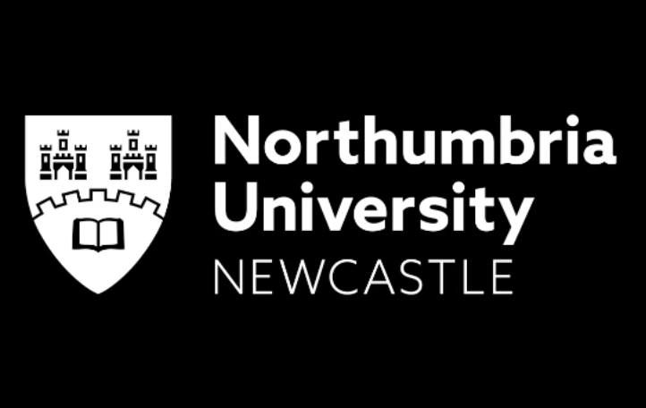

NU Short Term Program
2024. 01 — 2024. 02

노섬브리아 대학교 단기 프로그램 동안 두 주간 투명 물체의 위치 파악 프로젝트를 진행했습니다. PyTorch를 이용해 ResNet의 핵심 아이디어를 U-Net 구조에 통합하고 간단히 구현했습니다. 모델 개발 중 발생한 차원 불일치와 같은 문제를 해결하면서 내부 계산 과정에 대한 통찰력을 얻었습니다. 평가는 뛰어나지 않았지만, 이전에는 익숙하지 않았던 문제를 해결하며 단기 프로젝트에서 최상위를 달성하였습니다.